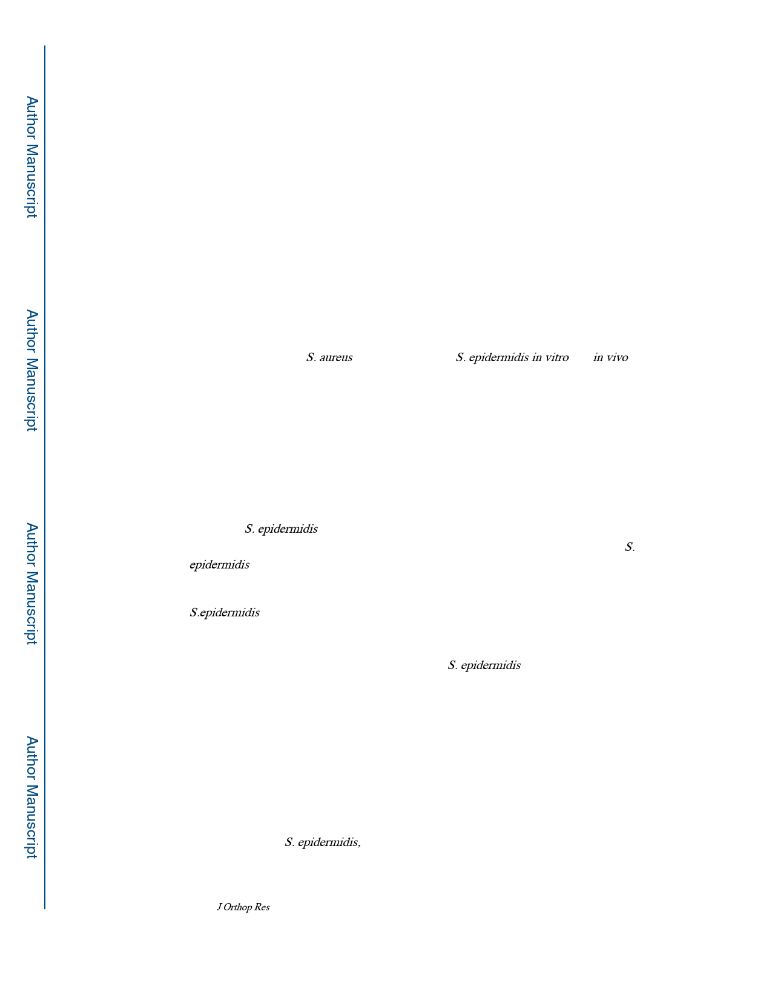

Tomizawa et al.
Page 9
with the findings of Lankinen et al, who demonstrated similar bone destruction tendencies to
our results with a rabbit model.36
On SEM analysis, RP62A produced less biofilm compared to USA300. This was not due to
slow biofilm formation, as there was no increase of %biofilm area between day 14 and 42,
and the empty lacunae similar to that observed in mature USA300 biofilm21 were already
seen in RP62A infection at day 14 (Fig. 5C). Thus, similar to the histology results, the
findings confirm a pathogenesis of RP62A, whose virulence is markedly limited from that of
USA300 due to the absence of genes whose immune evasion functions usurp host factors to
create a protective glycocalyx on the implant. Nonetheless, the limited RP62A-biofilm on
the implant cannot be removed by the host, and likely inhibits osseous integration of
orthopaedic implants.
Another surprising finding in our study was that RP62A stimulates a robust pro-
inflammatory transcriptome, similar to that of USA300 (Fig.6), despite the absence of
inflammatory cells and bone marrow destruction. While similar gene expression findings
have been reported for S. aureus infections,37,38 and S. epidermidis in vitro and in vivo
studies,39,40 the lack of osteolysis in this osteoclastogenic environment remains largely
unexplained and remains an important future research direction.
Finally, implant loosening was observed in USA300 and RP62A implants, although the
severity of the loosening was very different (Fig. 7). USA300 completely inhibited osseous
integration, which is consistent with the extensive osteolysis observed in our histological and
μCT analyses. By contrast, RP62A permitted some osseous integration, but also induced
fibrotic tissue formation around the implant compared to Sterile controls. Of note is that
similar histology and biomechanical testing results have been reported in clinical implant-
associated S. epidermidis infections41. Thus, we believe this experimental model has
excellent construct and face validity with the clinical orthopaedic problems caused by S.
epidermidis, most notably, implant loosening.
There are several limitations in this study. First, we did not evaluate non-biofilm producing
S.epidermidis strains, which may yield different results9. Second, we used CFU assays as
our only outcome measure of infection, which is common in this field of research, although
confirmatory molecular analyses such as bacterial gene PCR or next generation sequencing
might be beneficial. Third, the distinction between S. epidermidis infection and colonization
remains unclear in the absence of Gram positive histology. However, because of the clear
evidence of histologic and biomechanical implant loosening, we believe the current results
formally demonstrate RP62A’s ability to cause infection in healthy animals. Nevertheless,
further studies are warranted to distinguish minor acute infection from colonization and
chronic infection, or from aseptic loosening. Fourth, our finding of the RP62A induced pro-
inflammatory transcriptome in the absence of osteolysis remains unexplained. Thus, follow
up studies to investigate negative feedback gene expression (e.g. soluble (IL1-receptor
antagonist and osteoprotegrin) and intracellular (suppressors of cytokine signaling (SOCSs))
are needed. Additionally, studies designed to determine if the induced transcriptome is
caused directly by S. epidermidis, or implant micromotion are also critical for establishing
the root cause of the clinical problem. Finally, we did not investigate implant loosening after
J Orthop Res. Author manuscript; available in PMC 2021 April 01.